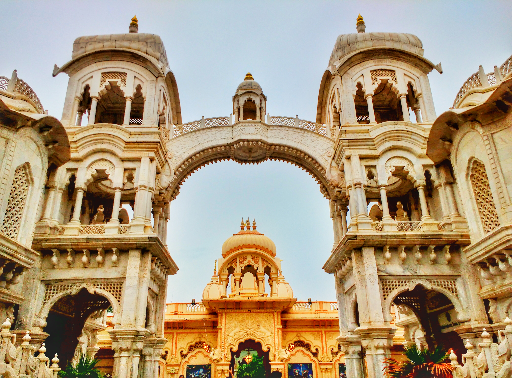
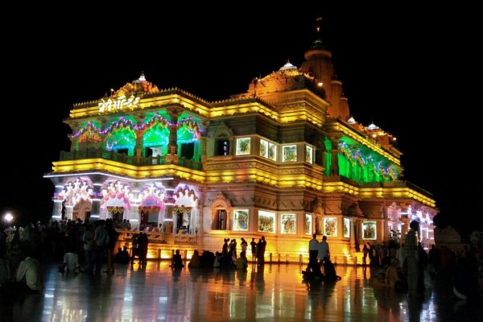

The great poet Tulsidas, who made the Ramayana accessible for the general reading public by translating it into a dialect of Hindi, took part in a miraculous event at Vrindavan which resulted in a temple there being dedicated to him. Today one can visit this Tulsidas temple at Gyan Gudri, Vrindavan.
As centuries passed, the sites identified by Vajranabh, along with their deities and temples, again faded from the awareness of the world. The twelve forests of Braj again became overgrown and forgotten. Amazingly, yet another instance of rediscovery and renewed devotion and worship took place! This happened in the medieval era, when the northern portion of the Indian subcontinent was brought under Mughal rule.
The devotion of the saints of this era can still be felt in Vrindavan today and the deities that manifested in their presence or were re-discovered or newly installed are still there, attracting devotees from around the world to visit and have darshan. These deities include Radharaman-ji, Radha Shyamsundar-ji, Banke Bihari-ji and others.
The great saints who, through their devotion (bhakti) and divine visions re-discovered Krishna’s eternal presence in Vrindavan established or became part of a number of different devotional lineages. Some of the most well-known of these are the Radhavallabh sampradaya (associated with Hit Harivansh Mahaprabhu), the Nimbark and Haridasi lineages (associated with Swami Haridas ji), and the Vallabhite or Pushtimarg lineage (associated with Mahaprabhu Vallabhacharya).
Bhaktivedanta Swami Prabhupada established Krishna Balaram temple in Vrindavan in 1975. Its standards of service to the dieties – flowers, food offerings, and devotional music – have made perhaps it the most popular temple in all of Vrindavan. Srila Prabhupada’s Samadhi is also here and the temple remains a primary center of the worldwide ISKCON movement.